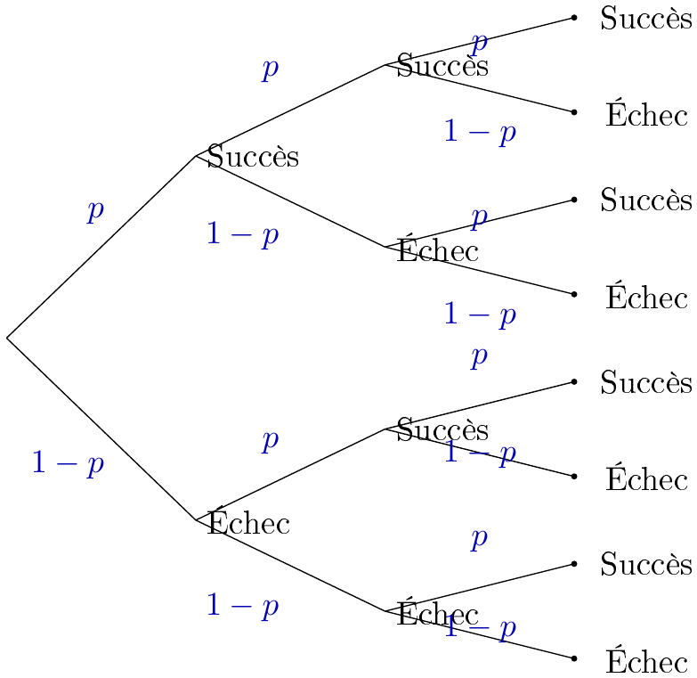

Chapitre 11 : Lois discrètes
Terminale complémentaire · Chapitre 8 — Lois discrètes · cours de Frederik de Peyrelongue
I. Variable aléatoire et loi de probabilité
I.1 Variable aléatoire
Une variable aléatoire $X$ est une fonction définie sur un univers $\Omega$ et à valeurs dans $\R$.
Si $x_{1},x_{2},\dots,x_{r}$ désignent les valeurs prises par $X$, on note « $X=x_{i}$ » l'événement « $X$ prend la valeur $x_{i}$ ».
On considère le jeu suivant : on lance un dé à six faces.
- si le résultat est pair, on gagne $2$ euros ;
- si le résultat est $1$, on gagne $3$ euros ;
- si le résultat est $3$ ou $5$, on perd $4$ euros.
On a défini une variable aléatoire $X$ sur $\Omega=\{1\,;2\,;3\,;4\,;5\,;6\}$ qui peut prendre les valeurs $2$, $3$ ou $-4$.
On a donc : $X(1)=3$, $X(2)=2$, $X(3)=-4$, $X(4)=2$, $X(5)=-4$, $X(6)=2$.
I.2 Loi de probabilité
Soit une variable aléatoire $X$ définie sur un univers $\Omega$ et prenant les valeurs $x_{1},x_{2},\dots,x_{r}$.
La loi de probabilité de $X$ associe à toute valeur $x_{i}$ la probabilité $\prob(X=x_{i})$.
On considère la variable aléatoire $X$ définie dans l'exemple précédent.
Chaque issue du lancer de dé est équiprobable et égale à $\dfrac{1}{6}$.
La probabilité que la variable aléatoire prenne la valeur $2$ est égale à $\dfrac{1}{6}+\dfrac{1}{6}+\dfrac{1}{6}=\dfrac{1}{2}$.
On note : $\prob(X=2)=\dfrac{1}{2}$. De même : $\prob(X=3)=\dfrac{1}{6}$ et $\prob(X=-4)=\dfrac{1}{6}+\dfrac{1}{6}=\dfrac{1}{3}$.
On peut résumer les résultats dans un tableau :
| $x_{i}$ | $-4$ | $2$ | $3$ |
| $\prob(X=x_{i})$ | $\dfrac{1}{3}$ | $\dfrac{1}{2}$ | $\dfrac{1}{6}$ |
Ce tableau résume la loi de probabilité de la variable aléatoire $X$.
Remarque. $\prob(X=x_{i})$ peut se noter $p_{i}$.
La somme de toutes les probabilités $\prob(X=x_{i})$ doit toujours être égale à $1$.
Dans l'exemple traité plus haut :
II. Loi uniforme et loi de Bernoulli
II.1 Loi uniforme discrète sur $\{1\,;2\,;\dots\,;n\}$
$X$ est une variable aléatoire qui prend ses valeurs dans l'ensemble $\{1\,;2\,;\dots\,;n\}$ avec $n\in\N^{*}$.
Dire que la loi de probabilité de $X$ suit la loi uniforme sur $\{1\,;2\,;\dots\,;n\}$ signifie que toutes les valeurs prises par $X$ sont équiprobables. Ainsi, pour tout entier naturel $k$ de l'ensemble $\{1\,;2\,;\dots\,;n\}$ :
Soit $X$ une variable aléatoire qui suit la loi uniforme sur $\{1\,;2\,;\dots\,;n\}$ : alors l'espérance de $X$ vaut
Soit un dé équilibré et $X$ la variable aléatoire qui indique le numéro de la face. $X$ prend les valeurs $\{1\,;2\,;\dots\,;6\}$ et suit une loi uniforme, donc
II.2 Épreuve et loi de Bernoulli
Une épreuve de Bernoulli est une expérience aléatoire à deux issues. L'une est souvent appelée succès et notée $S$, l'autre est souvent appelée échec et notée $\overline{S}$.
L'épreuve consiste à observer la parité d'un lancer de dé : il y a deux issues, pair ou impair.
On considère une épreuve de Bernoulli où la probabilité de succès est $p$. $X$ est la variable aléatoire qui prend la valeur $1$ en cas de succès et $0$ en cas d'échec.
La loi de probabilité de $X$ est appelée loi de Bernoulli de paramètre $p$.
| $x_{i}$ | $0$ | $1$ |
| $\prob(X=x_{i})$ | $1-p$ | $p$ |
$X$ est une variable aléatoire qui suit la loi de Bernoulli de paramètre $p$.
III. Schéma de Bernoulli et loi binomiale
III.1 Schéma de Bernoulli
On considère une expérience aléatoire qui consiste à répéter $n$ fois une même épreuve de Bernoulli (épreuve à deux issues : $S$ succès et $\overline{S}$ échec). On note $p=\prob(S)$ et $\prob(\overline{S})$.
Lorsque cette épreuve est répétée de manière identique et indépendante, on obtient un schéma de Bernoulli de paramètre $n$ et $p$.
À ce schéma de Bernoulli, on associe une variable aléatoire $X$ qui compte les succès.

Formule de calcul de $\prob(X=k)$
Avec pour $k$ succès parmi $n$ tirages, on a aussi $(n-k)$ échecs : il y a plusieurs chemins réalisant cet événement. La probabilité sur une branche avec uniquement $k$ succès est de $p^{k}(1-p)^{n-k}$. Il faut ensuite dénombrer (compter) les branches avec uniquement $k$ succès.

III.2 Coefficients binomiaux
On représente à l'aide d'un arbre de probabilité un schéma de Bernoulli constitué de $n$ épreuves. Pour tout entier $k$ avec $0\leqslant k\leqslant n$, le nombre de chemins réalisant $k$ succès est noté $\dbinom{n}{k}$.
La notation $\dbinom{n}{k}$ se lit « $k$ parmi $n$ ». Ces nombres sont appelés coefficients binomiaux. La formule de calcul n'est pas au programme.
Pour tout entier $n\geqslant 1$ :
- $\dbinom{n}{0}=\dbinom{n}{n}=1$ ;
- pour tout entier $k$ avec $0\leqslant k\leqslant n$, $\dbinom{n}{k}=\dbinom{n}{n-k}$ (par symétrie).
et un seul chemin qui réalise $n$ succès.
Il y a autant de chemins sur l'arbre qui réalisent $k$ succès que de chemins qui réalisent $k$ échecs, c'est-à-dire $n-k$ succès.
Pour tous entiers naturels $n$ et $k$ tels que $n\geqslant 1$ et $0\leqslant k\leqslant n-1$ :
Application : le triangle de Pascal.
$\dbinom{n}{k}$ est le coefficient binomial qui compte le nombre de chemins pour avoir $k$ succès.
Le triangle de Pascal permet de calculer les coefficients binomiaux.
| $n$ | Triangle | $\binom{n}{0}$ | $\binom{n}{1}$ | $\binom{n}{2}$ | $\binom{n}{3}$ | $\binom{n}{4}$ | $\binom{n}{5}$ |
| $1$ | $1\quad 1$ | $1$ | $1$ | ||||
| $2$ | $1\quad 2\quad 1$ | $1$ | $2$ | $1$ | |||
| $3$ | $1\quad 3\quad 3\quad 1$ | $1$ | $3$ | $3$ | $1$ | ||
| $4$ | $1\quad 4\quad 6\quad 4\quad 1$ | $1$ | $4$ | $6$ | $4$ | $1$ | |
| $5$ | $1\quad 5\quad 10\quad 10\quad 5\quad 1$ | $1$ | $5$ | $10$ | $10$ | $5$ | $1$ |
III.3 La loi binomiale
La variable aléatoire $X$ qui compte les succès dans un schéma de Bernoulli de paramètre $n$ et $p$ suit la loi binomiale de paramètres $n$ et $p$, notée $\mathcal{B}(n\,;p)$.
La variable aléatoire $X$ prend des valeurs entières entre $0$ et $n$ et
$n=5$, $k=3$, $p=0{,}1$ :
$X$ est une variable aléatoire qui suit la loi binomiale de paramètres $n$ et $p$.
IV. Loi géométrique
IV.1 Définition
On répète une épreuve de Bernoulli dont la probabilité de succès est $p$. $X$ est la variable aléatoire qui compte le nombre d'épreuves nécessaires pour avoir le premier succès.
La loi de probabilité de la variable aléatoire $X$ est appelée loi géométrique de paramètre $p$.
$X$ est une variable aléatoire qui suit la loi géométrique de paramètre $p$. Pour tout entier naturel $k\geqslant 1$ :
L'événement $\{X=k\}$ est réalisé lorsque l'on obtient $k-1$ échecs suivis d'un succès.
Donc
$X$ est une variable aléatoire qui suit la loi géométrique de paramètre $p$.
IV.2 Loi géométrique : une loi sans mémoire
$X$ est une variable aléatoire qui suit une loi géométrique de paramètre $p$.
$X$ est une variable aléatoire qui suit une loi géométrique de paramètre $p$. Alors
On dit qu'une loi géométrique est une loi sans mémoire. Cela signifie que devoir attendre plus de $5$ essais pour obtenir un succès a la même probabilité que l'on parte de la 1re épreuve ou de n'importe quelle $i$ème épreuve, sachant que l'on n'a pas obtenu de succès pour les $i$ premières épreuves.
C'est une caractéristique des lois géométriques.